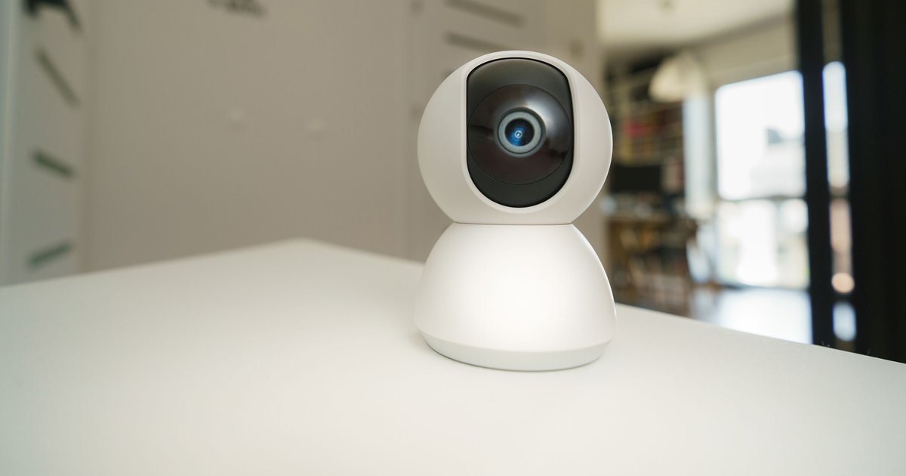

Full HD (1080p) já entrega boa nitidez para a maioria dos casos de monitoramento de pet; 2K ajuda principalmente quando o ambiente é grande ou você usa zoom digital com frequência. A escolha certa depende do seu cômodo, não de "qual número é maior".
| Critério | 1080p (Full HD) | 2K |
|---|---|---|
| Cômodo de tamanho comum, boa iluminação | Suficiente | Sem ganho perceptível |
| Ambiente grande, pet longe da câmera | Pode perder detalhe | Recomendado |
| Uso frequente de zoom digital | Perde nitidez ao ampliar | Mantém mais detalhe |
| Consumo de dados/cartão SD | Menor | Bem maior |
| O que mais impacta a experiência | Visão noturna e taxa de quadros (fps) costumam pesar mais que a resolução isolada | |
Para acompanhar o pet em tempo real em cômodos de tamanho comum, com boa iluminação e sem necessidade de dar zoom, o Full HD já entrega detalhe suficiente — é o padrão de modelos populares como a TP-Link Tapo C200 (mybest, retrieved 2026-08-22).
Visão noturna e taxa de quadros por segundo (fps) costumam impactar mais a experiência prática do que a resolução isolada — uma câmera 2K com visão noturna ruim entrega pior experiência à noite do que uma 1080p bem calibrada.
entenda como funciona a visão noturna em detalhe
Resolução maior também significa arquivos de vídeo maiores — uma câmera 2K pode consumir bem mais espaço no cartão SD e mais dados de internet ao transmitir ao vivo pelo app, especialmente em conexões móveis limitadas. Se você depende de dados móveis para checar a câmera fora de casa com frequência, vale considerar esse custo adicional antes de optar pela resolução mais alta.
O mesmo cartão SD usado para armazenamento local também é o que mantém a câmera gravando quando a internet cai — veja o que continua funcionando offline.
Full HD (1080p) já entrega boa nitidez para a maioria dos casos de monitoramento; 2K ajuda principalmente quando o ambiente é grande ou você usa zoom digital com frequência. A escolha depende do seu cômodo, não de qual número é maior.
Para acompanhar o pet em tempo real em cômodos de tamanho comum, com boa iluminação e sem necessidade de zoom, o Full HD já entrega detalhe suficiente.
Vale em ambientes grandes onde o pet fica longe da câmera, se você usa zoom digital com frequência, ou quer identificar detalhes finos. Fora esses casos, o Full HD costuma resolver melhor.
Sim. Uma câmera 2K pode consumir bem mais espaço no cartão SD e mais dados de internet ao transmitir ao vivo, especialmente em conexões móveis limitadas. Vale considerar esse custo antes de optar pela resolução mais alta.
Não pague o upgrade de resolução automaticamente — avalie primeiro o tamanho do ambiente e o quanto você usa zoom. Para a maioria dos tutores, 1080p com boa visão noturna resolve melhor do que 2K com recursos noturnos fracos.
volte ao guia completo de câmera para monitorar pet
Veja nossa política editorial e como verificamos as fontes citadas neste artigo.
🐾 Confira o preço e a disponibilidade atual no Mercado Livre.
Ver no Mercado LivreLink de afiliado: podemos receber uma comissão por compras feitas através deste link, sem custo adicional para você.
Nildo Alves — tutor de pets e curador de produtos no Smart Pet Gadgets. Pesquisa especificações de fabricante, dados de mercado e fontes veterinárias publicadas por terceiros para ajudar outros tutores a escolher melhor.
Sobre o Smart Pet Gadgets · Contato · Política editorial e de afiliados